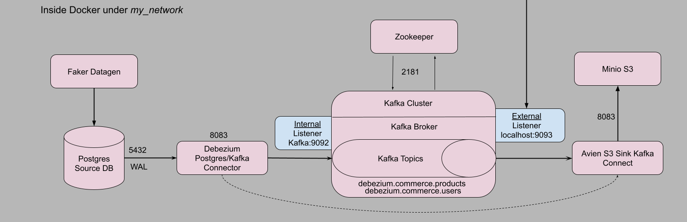

Introduction
Testing is one of the important phases in software development cycle before a software is turned to production.

Testing is a way to simulate and the application for all possible actions from users before delivery. It reveals flaws in development and sometimes even upto design phase. Imagine a scenario in which a user has to enter price of a product. Mistakenly they enter 1w instead of 12. If this pattern happens regularly, and in the monthly report, these numbers won’t add up at all. With testing, we can set guardrails to protect against such mistakes.
In my post, I designed a pipeline to check a Postgres DB for data changes and transport those changes through Apache Kafka and store in S3-like storage. However, I didn’t have time to write proper test cases. After publishing that post, I created unit and integration test cases. In this post we will go through how each test case was developed.
Testing Environment
In almost well setup software delivery teams, there are two environments before delivery into production – development and testing.
In our case, the architecture as shown below, there are source and sink systems with Apache Kafka in the middle. The Debezium connects source database(DB) to Kafka. Testing the data pipeline shouldn’t affect development environment or live environment. So we will setup a testing environment that mimics the live environment – using a different port numbers, source DB, topics, buckets.
In the first part of testing, we will do unit and integration for the source systems - Fake datagen and source Postgres DB

Full project is located here.
Source system
Source system in our case is just two components – a python script that generates data and Postgres database that stores the generated data. With automated testing, we will do checks on individual component – unit tests, a combined test – integration test.
Setup
I created a directory tests to mimic a testing environment. File structure drawn using this wonderful utility app.
tests directory structure
.
├── postgres
│ └── init.sql
├── Makefile
├── docker-compose-test.yml
└── tests
├── Pipfile
├── Pipfile.lock
├── integration
│ └── test_datagen_db.py
├── test-setup-connections.sh
├── test_Dockerfile
├── unit
│ ├── test_datagen.py
│ └── test_pg_src_db.py
└── user_product_data.py- Initilisation script to setup DB
- Makefile with added commands for testing
- Docker-compose template file for testing
- Pipfile contains dev packages for testing
- A testing script to test integration between datagen and DB
- A shell script to establish connectors
- Test dockerfile to copy all the files and install dependencies
- Unit test script for datagen
- Unit test script for Postgres source DB
- Original script for which testing automation is written
Changes to compliment testing
Docker-compose file
Since we’re going to create a separate testing environment, it would be useful to have a separate docker-compose-test.yml file too.
Changes
Change the host port number
Why? Because if we run both testing and live environment in the same machine(most often it wouldn’t be), then there will be clashing of ports.
So, for DB host port changes from
5432to15432,Zookeeper -
2181to12181,Kafka -
9093to19093and also corresponding environment changes,Debezium Kafka Connect -
8083to18083.
Creating a new test network
networks:
my_test_network:Environment
- Creating separate variables to pass test environment parameters.
Dockerfile
We are trying to reproduce live version in testing. That means the test-suite must be built the same way. However, as we run pytest manually and not as an entrypoint with the docker, environment must be made ready for container. This is done with ENV keyword. Remember to pass these variables in docker-compose.yml.
ENV TEST_POSTGRES_USER = ${TEST_POSTGRES_USER}
ENV TEST_POSTGRES_PASSWORD = ${TEST_POSTGRES_PASSWORD}
ENV TEST_POSTGRES_DB = ${TEST_POSTGRES_DB}
ENV TEST_POSTGRES_HOST = ${TEST_POSTGRES_HOST}
ENV DB_SCHEMA = ${DB_SCHEMA}Also we need to set python path to make python execute tests. That is achieved with ENV PYTHONPATH=/test_app/tests/.
Finally we can keep our container alive with command tail -f /dev/null. This is a unix feature which continuously runs this command and flushes the output to a null directory.
Pipfile and Pipfile.lock
The initial requirements are still the same but for testing we add pytest. pipenv allows to categorise packages such as pytest as dev-packages which makes it useful to install only when necessary. To install we use pipenv install --dev --system --deploy. --dev flag installs the dev-packages.
Unit testing
Testing a unit or single component is called unit testing. Here there are two units – Datagen and source DB.
Datagen unit testing
A test file in python is named with test prefix. pytest picks up those file automatically to run tests. The unit/component function we are testing is imported in the test file. Here they are generate_user_data and generate_product_data.
Any function with test as prefix is recognised by pytest library. And assert keyword is used to compare the actual and expected output. This comparision can any condition depending on the case.
Here we determine if the generated user and product data are of dictionary data type. And determine if the data generated is not empty. Upon successful testing, the pytest should return with 100% and no errors.
Source DB
Unlike datagen testing, source DB testing involves little more preparatory steps such as connection parameters.
Here we test
Whether DB is reachable with the given connection parameters,
Whether a simple
select 1command returns the value1,Whether the schema created using
init.sqlscript contains the tables we created –productsandusers,
– Whether are there any missing tables.
As environment variable I used TEST_SCHEMA but unfortunately the script failed to recognise the variable. If you find out why please let me know.
To execute a function only once per run we can leverage pytest’s scope as module. @pytest.fixture(scope="module")
Integration testing
Integration testing is a test of two or more components such as datagen and source DB.
We put this file inside integration directory and as usual prefix it with test, import env variables and setup DB connection.
Changes to original script
In the first version of the script to generate data and push it to the DB, I didn’t modularise the functionalities. Every operation – data generation, DB connect, inseration, update, delete was written under one function. Had I not implemented testing, this simple function would be sufficient. Any failure would only point to this single function. However, for testing we must test each operation. That means each operation has be modularised or in other words has to be its own function.
Yes, this made for further changes but the code looks robust and easy to spot failures. This is important point to remember.
Testing capabilities
We check each operation:
Generation and inseration of data into respective tables,
Update some records
Delete some records
Finally execute all operation sequentially and verify the total number of records remaining. This way we know the operation performed without errors.
Ofcourse, these test cases are the basics. Several more can be added to test specific or edge cases.
A successful testing will results in 100% message being displayed. Now we can be sure the source end of the data pipeline works. Next would be test the middle part of the pipeline. Since the next section would be to test at Kafka and as it is connected with Debezium it is an integration test.
Middle system – Debezium Kafka connect and Kafka
Testing at Kafka means we update docker-compose-test.yml with zookeeper, kafka and debezium with Aiven S3 connector. Please refer to the source code for more info.
We use kafka-python library to test at Kafka. Add in kafka-python = "*" to the Pipfile and read its dev install.
For testing at Kafka, we will need the Kafka topics that be monitored by Kafka broker and also a connection to the source DB to verify if contents came through.
KAFKA_TOPIC_PRODUCTS = "test_debezium.commerce.products"
KAFKA_TOPIC_USERS = "test_debezium.commerce.users"
TEST_POSTGRES_USER = os.getenv("TEST_POSTGRES_USER")
TEST_POSTGRES_PASSWORD = os.getenv("TEST_POSTGRES_PASSWORD")
TEST_POSTGRES_HOSTNAME = os.getenv("TEST_POSTGRES_HOST")
TEST_POSTGRES_DB = os.getenv("TEST_POSTGRES_DB")
SCHEMA = os.getenv("DB_SCHEMA", "commerce")Like previously we introduce pytest’s module functionality for DB connection. In addition we also make KafkaConsumer for products and users similarly so.
@pytest.fixture(scope="module")
def get_consumer_users():
consumer_users = KafkaConsumer(
KAFKA_TOPIC_USERS,
bootstrap_servers=['kafka:9092'],
auto_offset_reset="earliest",
consumer_timeout_ms=1000
)
yield consumer_users
consumer_users.close()Then we test the following:
- Test if bootstrap server is connected
def test_bootstrap_connection(get_consumer_products, get_consumer_users):
assert get_consumer_products.bootstrap_connected()
assert get_consumer_users.bootstrap_connected()- Test if topic name is correctly subscribed
def test_topic_name(get_consumer_products, get_consumer_users):
assert get_consumer_products.subscription() == {KAFKA_TOPIC_PRODUCTS}
assert get_consumer_users.subscription() == {KAFKA_TOPIC_USERS}- Test to check if the total number of transactions is expected
def test_total_transactions(get_consumer_users, get_consumer_products):
lsn_u=[]
lsn_p=[]
for msg in get_consumer_users:
if msg.value:
json_object = json.loads(msg.value)
lsn_u.append(json_object['payload']['source']['lsn'])
for msg in get_consumer_products:
if msg.value:
json_object = json.loads(msg.value)
lsn_p.append(json_object['payload']['source']['lsn'])
assert len(lsn_u) == 35
assert len(lsn_p) == 35- 1
- Parsing through JSON Object to get to the value
- Test if a username from the DB is present in the message
def test_username_present(get_db_connection):
usernames =[]
consumer_users = KafkaConsumer(
KAFKA_TOPIC_USERS,
bootstrap_servers=['kafka:9092'],
auto_offset_reset="earliest",
consumer_timeout_ms=1000
)
for msg in consumer_users:
if msg.value:
json_object = json.loads(msg.value)
if json_object['payload']['after']:
usernames.append(json_object['payload']['after']['username'])
consumer_users.close()
cur = get_db_connection.cursor()
cur.execute(f"SELECT username FROM {SCHEMA}.users")
result = cur.fetchone()[0]
assert result in usernames- 1
- For some weird reason, the KafkaConsumer pytest module failed to work
The next part would be verify if the Aiven S3 sink connector picked up our messages and stored in Minio S3 storage as JSON files. Once the testing for those have been written, this blog will be updated.
Conclusion
We learnt how to test data pipelines from source till its middle part. Files can be seen created in the directory provided.
Testing provided us with more clarity on the functionality of the pipeline.
Testing also helped us learn how to create a separate testing environment, Kafka listener interactions etc.
Importantly we learnt how to pytest to write test cases.
I hope you found this blog as informative as I found writing it. Thanks for taking the time to read it. I welcome your comments.